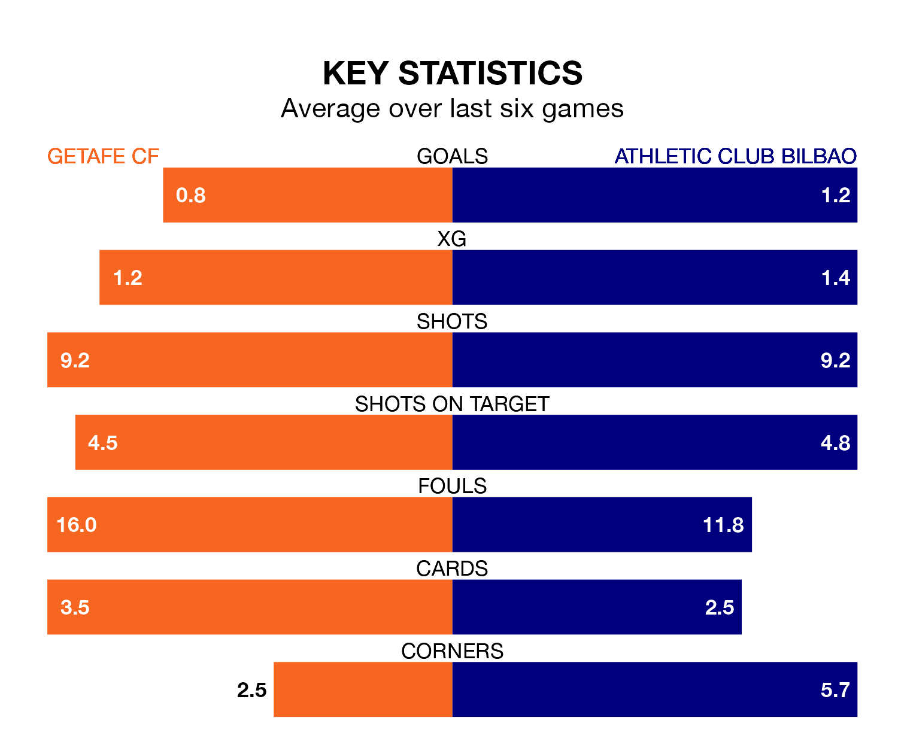

Getafe CF host Athletic Club Bilbao on Friday at Coliseum Alfonso Pérez in La Liga.
In their last league match, on Saturday, Getafe beat Almería 3-1 away, with goals from Mason Greenwood (two) and Jaime Mata.
Athletic lost, 3-1 away at Atlético Madrid, with Nico Williams scoring their goals.
In Unai Simón, Athletic can rely on one of the league's safest pair of hands. He has kept 15 clean sheets in his 32 appearances this season, and no 'keeper has prevented the opposition scoring more often in La Liga.
In Getafe's net, David Soria has 10 clean sheets in 33 games. He has conceded a goal every 71 minutes, 40% more often than the 96 minutes between goals for Simón Mendibil.
With 53 goals in 33 games so far this season, the visitors are scoring more than average in the league with 1.6 goals per game. And they are conceding fewer than average, letting in 33 goals at a rate of 1.0 per game.
The home side, meanwhile, are below average scorers, with 1.2 goals per game, compared to a league average of 1.3. They have conceded 1.4 goals per game.
In the last 10 years, Getafe and Athletic have played each other on 17 occasions. Getafe won two of them, Athletic five, and they drew 10 times.
On average, Getafe scored 0.9 goals and Athletic 1.5 in those matches.
Their last meeting was on September 27, when they played out a 2-2 draw.
Athletic are fifth in the table after 33 games, of which they have won 16 and drawn 10, earning 58 points.
Getafe are five places behind Athletic in 10th, with 10 wins and 13 draws putting them on 43 points.
Getafe are in mixed form in La Liga, with two wins and two draws from their last six games.
And also with two wins and two draws over that period, the away team's form is identical – they have both taken eight points from 18.
Updated: 12:00 (UTC), 02/05/24